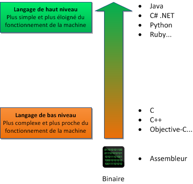

Introduction
Java est un langage de programmation polyvalent, orienté objet et largement utilisé dans l'industrie. Il permet de créer des applications web, mobiles et des logiciels.
Java : Quelques faits clés
- Possédé par Oracle : Oracle maintient et développe Java depuis 2010.
- Utilisé pour la création d'applications : Que ce soit pour des outils, des jeux ou des logiciels complexes.
- Utilisé pour le web : Avec des frameworks comme Spring et Hibernate.
- Beaucoup de ressources en ligne : Une communauté active et des tutoriels abondants pour apprendre.
Le langage Java est un langage généraliste de programmation synthétisant les principaux langages existants lors de sa création en 1995 par Sun Microsystems. Il permet une programmation orientée-objet (à l’instar de SmallTalk et, dans une moindre mesure, C++), modulaire (langage ADA) et reprend une syntaxe très proche de celle du langage C
Outre son orientation objet, le langage Java a l’avantage d’être modulaire (on peut écrire des portions de code génériques, c-à-d utilisables par plusieurs applications), rigoureux (la plupart des erreurs se produisent à la compilation et non à l’exécution) et portable (un même programme compilé peut s’exécuter sur différents environnements). En contre-partie, les applications Java ont le défaut d’être plus lentes à l’exécution que des applications programmées en C par exemple.
Java : Le Fonctionnement
- La JVM (Java Virtual Machine) : Java s'exécute sur une Machine Virtuelle Java (JVM), qui permet au code Java d'être exécuté sur différents systèmes d'exploitation sans modification.
- Objet : Java est un langage orienté objet, ce qui signifie que la programmation repose sur la création et la manipulation d'objets.
Java est un langage interprété, ce qui signifie qu’un programme compilé n’est pas directement exécutable par le système d’exploitation mais il doit être interprété par un autre programme, qu’on appelle interpréteur.

Un programmeur Java écrit son code source, sous la forme de classes, dans des fichiers dont l’extension est .java. Ce code source est alors compilé par le compilateur javac en un langage appelé bytecode et enregistre le résultat dans un fichier dont l’extension est .class.
Le bytecode ainsi obtenu n’est pas directement utilisable. Il doit être interprété par la machine virtuelle de Java qui transforme alors le code compilé en code machine compréhensible par le système d’exploitation. C’est la raison pour laquelle Java est un langage portable : le bytecode reste le même quelque soit l’environnement d’exécution
Niveau de Programmation
- Langages bas niveau : Comme l'assembleur, proches du matériel mais complexes à lire et à écrire.
- Langages haut niveau : Comme Java, plus proches du langage humain et plus abstraits par rapport au matériel.

Commencez avec la méthode main
Un programme Java commence toujours par une méthode main. Pour pratiquer, vous pouvez utiliser l'outil en ligne W3Schools.
https://www.jdoodle.com/online-java-compiler
- En Java, la classe Main et la méthode main jouent un rôle central dans le fonctionnement d'un programme.
- public class Main : Définit une classe nommée Main.
- public static void main(String[] args) : Point d'entrée obligatoire de tout programme Java.
- System.out.println(...) : Affiche du texte dans la console.
public class Main {
public static void main(String[] args) {
System.out.println("Bonjour !");
}
}
| Mot-clé | Signification |
|---|---|
| public | La méthode doit être accessible depuis n'importe où pour permettre à la JVM (Java Virtual Machine) de l'exécuter. |
| static | Elle peut être appelée sans avoir besoin de créer un objet de la classe. |
| void | La méthode ne renvoie aucune valeur. |
| String[] args | Tableau de chaînes de caractères, utilisé pour transmettre des arguments depuis la ligne de commande. |